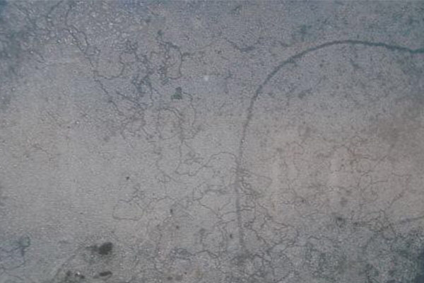
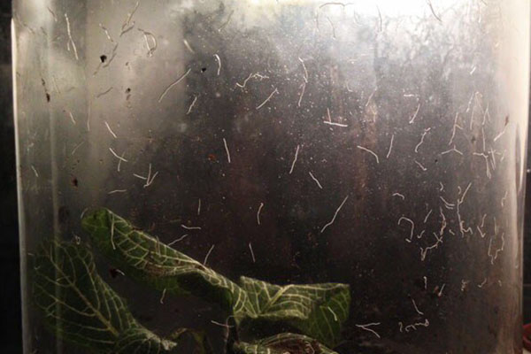
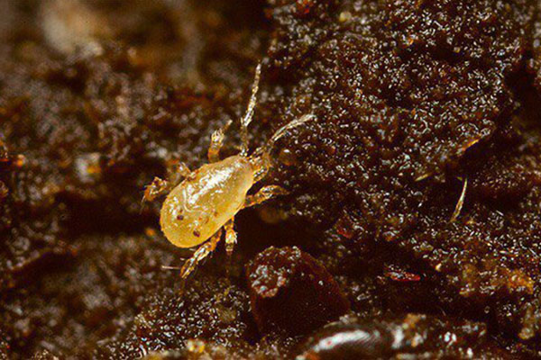
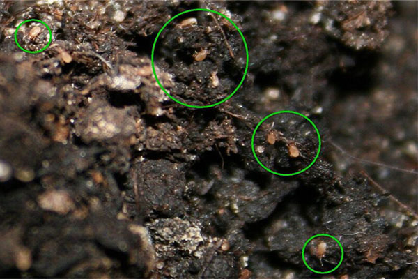

Паразиты в Вашем террариуме.
1. МОШКИ.
Часто вы спрашиваете, откуда в террариуме берутся мошки и вредят ли они вашим питомцам.
Мошки очень надоедливые и неприятные создания, но улиткам они никак не навредят. Но их может расплодиться очень много в доме улитки , а так же по всему дому. Откуда же они берутся?
Мошки могут залетать в комнату с улицы или же заводиться в цветочной земле. В терр к улиткам они попадают через щели между крышкой, если она не плотно прилегает или же через вентиляцию.
Что же делать в таком случае?
В террариуме нужно провести генеральную уборку-прокипятить или заменить грунт, отдать кипятком терр и предметы-миски, укрытия, если таковые имеются.
Вентиляцию заклеить двойным слоем марли, марлю не убирать до того, как не убедитесь, что мошки из квартиры исчезли полностью. Летом же я вообще советую марлю не убирать, так как мошек летом на улице много, у них замечательная возможность плодиться на фруктах и овощах, особенно скисших. В террариуме их как раз привлекает еда, которую вы даёте рогатым любимцам. Мошки могут стать настоящей проблемой, так как вывести их непросто и долго, самый лучший вариант сразу заметить проблему и искоренить её, обезопасив на будущее террариум от их появления.
2. НЕМАТОДЫ.
Нематоды это практически не видимые глазу(если только их не слишком много, как на фото) тонкие белые черви-паразиты, заводятся они в террариумах, в которых не поддерживается чистота, вовремя не убирается еда и отходы жизнедеятельности улиток. Но, они могут быть занесены с новым грунтом, травой, мхом из леса и так далее. Строго говоря, яйца нематод присутствуют практически в любом грунте, но вылупляются только при благоприятных для них условиях - если у вас соблюдены все нормы содержания, то для них это райское местечко для жизни. Борются с ними так же, проводя ген уборку террариума.
Вывести нематод порой проблема, бывает так, что только вы сделали генералку и снова увидели характерные тонкие полосочки-дорожки. Советую сильно не переживать по этому поводу - нематоды вредны для улиток только в большом количестве, тогда улитка начинает стрессовать. Но как правило, они плодятся не очень быстро, а проводя по нормам раз в месяц ген уборку, вы можете не беспокоиться о том, что их будет настолько много, что улитка будет нервничать. Но, если нематоды появились в контейнере с кладкой, убирать из нужно незамедлительно, так как кладке они вредят, а так же совсем крошечным малышам.
 |
 |
3. ПОЧВЕННЫЕ КЛЕЩИКИ.
Это маленькие жучки белого цвета, часто заносятся в терр так же как и нематоды, с зеленью, мхом и т.д.
Метод борьбы - та же генеральная уборка. Предотвратить их попадание в терр можно тщательной обработкой всего, что заносите в терр с улицы. Для улиток не опасны.
 |
 |
4. МУЧНЫЕ ЖУЧКИ.
Эти создания часто обитают в закрытых пачках крупы, из-за не соблюдения санитарных норм на производстве. Заметить их можно не всегда, а делая зерносмесь из этой крупы, мы можем спровоцировать их попадание в террариум к улиткам.
Метод борьбы - генеральная уборка. Для улиток не опасны.